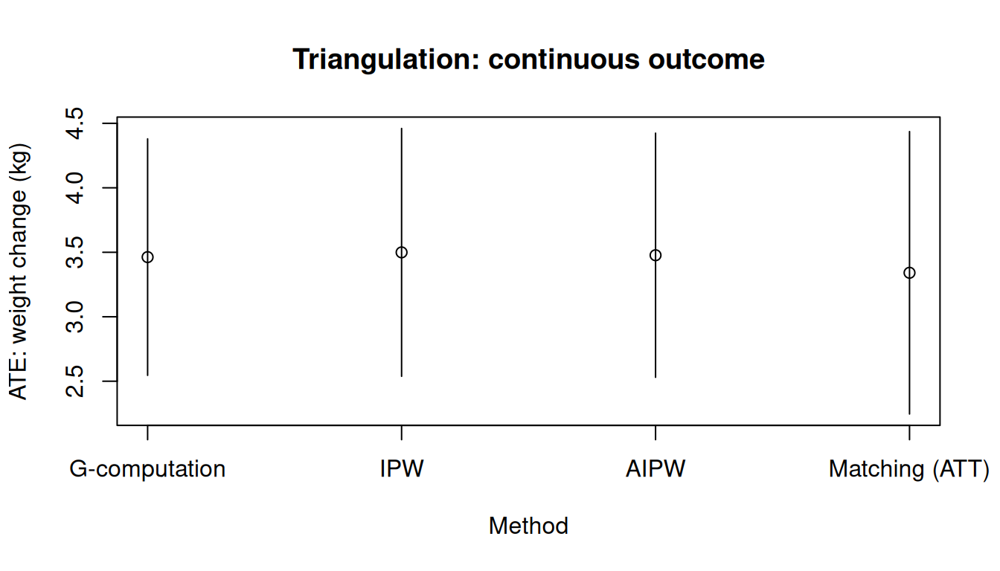
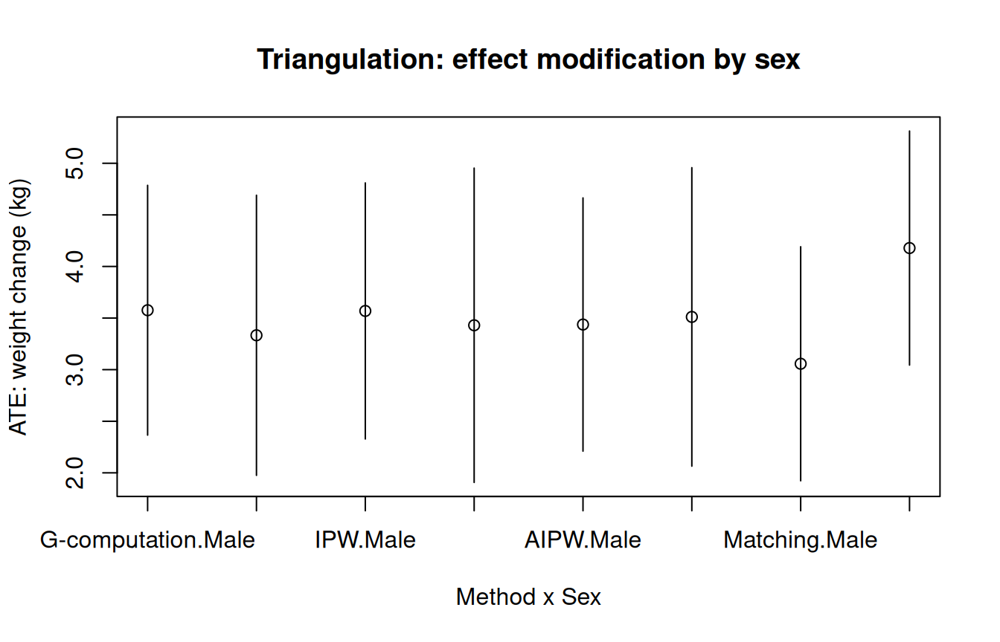

方法论三角：g-computation、IPW、AIPW、匹配和 SNM
Methodological triangulation: g-computation, IPW, AIPW, matching, and SNM · causatr 官方文档中译
来源：R 包 causatr 官方文档
triangulation.qmd，MIT 许可。 本页是中译，代码与运行结果直接取自原站的渲染输出，未在本站重新执行。 Copyright (c) 2026 causatr authors；许可证全文见原仓库LICENSE.md。
当多种估计方法对同一因果效应给出一致结果时，我们更有把握认为该结果不是单一建模 假定造成的假象。本文在 NHEFS 数据集上比较全部五种方法：
- G-computation 依赖于正确的结局模型。
- IPW 依赖于正确的倾向评分模型。
- AIPW（双稳健）只要其中一个模型正确就是相合的，两个模型都正确时还具有 半参数有效性。
- SNM（结构嵌套均值模型）依赖于正确的处理模型，直接估计 blip 参数——它是唯一 能正确处理时变效应修饰的方法。参见
vignette("snm")。 - 匹配依赖于正确的倾向评分模型，目标是 ATT。
数据：NHEFS
所有示例都使用 NHEFS 数据集 (Hernán 和 Robins 2025)。假定的因果结构如下：
- 处理（\(A\)）：
qsmk—— 1971 至 1982 年间是否戒烟（二值：0/1）。 - 结局（\(Y\)）：
wt82_71—— 体重变化，单位为 kg（连续），或gained_weight（\(\mathbf{1}\{Y > 0\}\)，二值）。 - 混杂因子（\(L\)）： 性别、年龄、种族、受教育程度、吸烟强度、 吸烟年数、锻炼、体力活动和基线体重。
\[ \begin{aligned} L &\sim F_L \\ A &\sim \text{Bernoulli}\!\bigl(\text{logit}^{-1}(\alpha_0 + \alpha_L^\top L)\bigr) \\ Y &= \beta_0 + \beta_A A + \beta_L^\top L + \varepsilon \end{aligned} \]
混杂因子 \(L\) 是 \(A\) 和 \(Y\) 的共同原因。在这一结构下，G-computation 通过结局模型 对 \(L\) 做调整，IPW 通过处理模型做调整，匹配则在处理组之间均衡 \(L\)。当四种方法 结果一致时，该结果就不太可能是单一建模假定造成的假象。
library(causatr)
library(tinyplot)
data("nhefs")
nhefs_complete <- nhefs[complete.cases(nhefs), ]
nhefs_complete$gained_weight <- as.integer(nhefs_complete$wt82_71 > 0)
nhefs_complete$sex <- factor(
nhefs_complete$sex,
levels = 0:1,
labels = c("Male", "Female")
)
confounders <- ~ sex + age + I(age^2) + race + factor(education) +
smokeintensity + I(smokeintensity^2) + smokeyrs + I(smokeyrs^2) +
factor(exercise) + factor(active) + wt71 + I(wt71^2)连续结局：体重变化
拟合全部四种方法
fit_gc <- causat(
nhefs,
outcome = "wt82_71",
treatment = "qsmk",
confounders = confounders,
censoring = "censored",
model_fn = stats::glm
)
fit_ipw <- causat(
nhefs_complete,
outcome = "wt82_71",
treatment = "qsmk",
confounders = confounders,
estimator = "ipw",
model_fn = stats::glm,
propensity_model_fn = stats::glm
)
fit_aipw <- causat(
nhefs_complete,
outcome = "wt82_71",
treatment = "qsmk",
confounders = confounders,
estimator = "aipw",
model_fn = stats::glm,
propensity_model_fn = stats::glm
)
fit_m <- causat(
nhefs_complete,
outcome = "wt82_71",
treatment = "qsmk",
confounders = confounders,
estimator = "matching",
estimand = "ATT"
)对比
ivs <- list(quit = static(1), continue = static(0))
res_gc <- contrast(fit_gc, ivs, reference = "continue")
#> 117 row(s) with NA predictions excluded from the target population.
res_ipw <- contrast(fit_ipw, ivs, reference = "continue")
res_aipw <- contrast(fit_aipw, ivs, reference = "continue")
res_m <- contrast(fit_m, ivs, reference = "continue")
results <- rbind(
cbind(method = "G-computation", res_gc$contrasts),
cbind(method = "IPW", res_ipw$contrasts),
cbind(method = "AIPW", res_aipw$contrasts),
cbind(method = "Matching (ATT)", res_m$contrasts)
)
results
#> method comparison estimate se ci_lower ci_upper
#> <char> <char> <num> <num> <num> <num>
#> 1: G-computation quit vs continue 3.462484 0.4677686 2.545674 4.379294
#> 2: IPW quit vs continue 3.499174 0.4902045 2.538391 4.459958
#> 3: AIPW quit vs continue 3.477009 0.4828865 2.530569 4.423449
#> 4: Matching (ATT) quit vs continue 3.341010 0.5586286 2.246118 4.435902当结局模型与倾向评分模型都设定正确时，AIPW 达到半参数有效界——它的标准误不会 大于单纯的 G-computation，也不会大于单纯的 IPW。在实际数据中，这一收益往往 不大，但绝不会是负的。
森林图
tinyplot(
estimate ~ method,
data = results,
type = "pointrange",
ymin = results$ci_lower,
ymax = results$ci_upper,
xlab = "Method",
ylab = "ATE: weight change (kg)",
main = "Triangulation: continuous outcome"
)
abline(h = 0, lty = 2, col = "grey40")
二值结局：体重增加
fit_gc_bin <- causat(
nhefs_complete,
outcome = "gained_weight",
treatment = "qsmk",
confounders = confounders,
family = "binomial",
model_fn = stats::glm
)
fit_ipw_bin <- causat(
nhefs_complete,
outcome = "gained_weight",
treatment = "qsmk",
confounders = confounders,
estimator = "ipw",
model_fn = stats::glm,
propensity_model_fn = stats::glm
)
fit_aipw_bin <- causat(
nhefs_complete,
outcome = "gained_weight",
treatment = "qsmk",
confounders = confounders,
estimator = "aipw",
family = "binomial",
model_fn = stats::glm,
propensity_model_fn = stats::glm
)
fit_m_bin <- causat(
nhefs_complete,
outcome = "gained_weight",
treatment = "qsmk",
confounders = confounders,
estimator = "matching",
estimand = "ATT"
)
res_gc_bin <- contrast(fit_gc_bin, ivs, reference = "continue")
res_ipw_bin <- contrast(fit_ipw_bin, ivs, reference = "continue")
res_aipw_bin <- contrast(fit_aipw_bin, ivs, reference = "continue")
res_m_bin <- contrast(fit_m_bin, ivs, reference = "continue")
results_bin <- rbind(
cbind(method = "G-computation", res_gc_bin$contrasts),
cbind(method = "IPW", res_ipw_bin$contrasts),
cbind(method = "AIPW", res_aipw_bin$contrasts),
cbind(method = "Matching (ATT)", res_m_bin$contrasts)
)
results_bin
#> method comparison estimate se ci_lower ci_upper
#> <char> <char> <num> <num> <num> <num>
#> 1: G-computation quit vs continue 0.1326922 0.02366249 0.08631463 0.1790699
#> 2: IPW quit vs continue 0.1379464 0.02498002 0.08898648 0.1869064
#> 3: AIPW quit vs continue 0.1361954 0.02487782 0.08743580 0.1849550
#> 4: Matching (ATT) quit vs continue 0.1488834 0.03168677 0.08677844 0.2109883tinyplot(
estimate ~ method,
data = results_bin,
type = "pointrange",
ymin = results_bin$ci_lower,
ymax = results_bin$ci_upper,
xlab = "Method",
ylab = "Risk difference (gained weight)",
main = "Triangulation: binary outcome"
)
abline(h = 0, lty = 2, col = "grey40")
诊断
在解释结果之前，先检查假设是否成立。diagnose() 提供正值性检查、协变量均衡 以及各方法特有的汇总。
diag_ipw <- diagnose(fit_ipw)
#> Note: `s.d.denom` not specified; assuming "pooled".
diag_m <- diagnose(fit_m)IPW 均衡
plot(diag_ipw)
#> Note: `s.d.denom` not specified; assuming "pooled".
匹配均衡
plot(diag_m)
跨方法的效应修饰
四种单时点处理方法都支持通过 A:modifier 这类交互项来刻画效应修饰，交互项写在 confounders 里。当四种方法在各层的处理效应上一致时，这有力地说明效应异质性是 真实的，而不是模型设定造成的假象。
这里我们加入 qsmk:sex，考察戒烟对体重变化的效应是否因性别而异。各方法处理 交互项的方式不同（G-computation 把它交给结局模型；IPW 把 MSM 扩展为 Y ~ 1 + sex；匹配则扩展为 Y ~ qsmk + sex + qsmk:sex），但在设定正确时 都应当还原出相同的各层估计值。
confounders_em <- ~ sex + age + I(age^2) + race + factor(education) +
smokeintensity + I(smokeintensity^2) + smokeyrs + I(smokeyrs^2) +
factor(exercise) + factor(active) + wt71 + I(wt71^2) +
qsmk:sex
fit_gc_em <- causat(
nhefs_complete,
outcome = "wt82_71",
treatment = "qsmk",
confounders = confounders_em,
model_fn = stats::glm
)
fit_ipw_em <- causat(
nhefs_complete,
outcome = "wt82_71",
treatment = "qsmk",
confounders = confounders_em,
estimator = "ipw",
model_fn = stats::glm,
propensity_model_fn = stats::glm
)
fit_aipw_em <- causat(
nhefs_complete,
outcome = "wt82_71",
treatment = "qsmk",
confounders = confounders_em,
estimator = "aipw",
model_fn = stats::glm,
propensity_model_fn = stats::glm
)
fit_m_em <- causat(
nhefs_complete,
outcome = "wt82_71",
treatment = "qsmk",
confounders = confounders_em,
estimator = "matching"
)
res_gc_em <- contrast(
fit_gc_em, ivs,
reference = "continue",
ci_method = "sandwich",
by = "sex"
)
res_ipw_em <- contrast(
fit_ipw_em, ivs,
reference = "continue",
ci_method = "sandwich",
by = "sex"
)
res_aipw_em <- contrast(
fit_aipw_em, ivs,
reference = "continue",
ci_method = "sandwich",
by = "sex"
)
res_m_em <- contrast(
fit_m_em, ivs,
reference = "continue",
ci_method = "sandwich",
by = "sex"
)
results_em <- rbind(
cbind(method = "G-computation", res_gc_em$contrasts),
cbind(method = "IPW", res_ipw_em$contrasts),
cbind(method = "AIPW", res_aipw_em$contrasts),
cbind(method = "Matching", res_m_em$contrasts)
)
results_em
#> method comparison estimate se ci_lower ci_upper by
#> <char> <char> <num> <num> <num> <num> <char>
#> 1: G-computation quit vs continue 3.576000 0.6174533 2.365814 4.786186 Male
#> 2: G-computation quit vs continue 3.333079 0.6924483 1.975906 4.690253 Female
#> 3: IPW quit vs continue 3.568991 0.6329339 2.328464 4.809519 Male
#> 4: IPW quit vs continue 3.430123 0.7769946 1.907242 4.953005 Female
#> 5: AIPW quit vs continue 3.437330 0.6259255 2.210539 4.664122 Male
#> 6: AIPW quit vs continue 3.511083 0.7378491 2.064925 4.957240 Female
#> 7: Matching quit vs continue 3.057178 0.5785409 1.923259 4.191097 Male
#> 8: Matching quit vs continue 4.178475 0.5785409 3.044555 5.312394 Female
#> n_by
#> <int>
#> 1: 762
#> 2: 804
#> 3: 762
#> 4: 804
#> 5: 762
#> 6: 804
#> 7: 762
#> 8: 804tinyplot(
estimate ~ interaction(method, by),
data = results_em,
type = "pointrange",
ymin = results_em$ci_lower,
ymax = results_em$ci_upper,
xlab = "Method x Sex",
ylab = "ATE: weight change (kg)",
main = "Triangulation: effect modification by sex"
)
abline(h = 0, lty = 2, col = "grey40")
各方法在每一层内结果一致，说明按性别划分的效应是真实的。若结果不一致， 则提示其中一种或多种方法存在模型误设。
在 IPW、AIPW 和匹配下，A:modifier 中的修饰因子必须是基线（处理前）变量。 边际结构模型中的时变修饰因子相当于对处理后变量取条件，会通过中介路径和对撞路径 使估计目标产生偏倚 (Robins, Hernán, 和 Brumback 2000)。 G-computation 没有这一限制，因为它建模的是结局，而不是处理。
对于时变效应修饰（修饰因子受先前处理影响），请使用 estimator = "snm"， 参见 vignette("snm")。
causatr 不会在运行时强制检查基线性（仅凭数据无法推断是否时变）。这需要用户自行负责。
各方法的适用场景
| Criterion | G-computation | IPW | AIPW | SNM | Matching |
|---|---|---|---|---|---|
| 需要的模型 | 结局 | 处理 | 两者 | 处理 | 处理 |
| 双稳健 | 否 | 否 | 是 | 否 | 否 |
| 半参数有效 | 否 | 否 | 是（两个模型都正确时） | 否 | 否 |
| 非静态干预 | 是 | 是（shift、scale_by、dynamic、IPSI） | 是（同 IPW） | 否（仅 treatment_values =） |
否（仅静态） |
| 连续处理 | 是 | 是（GPS） | 是（shift、scale_by） | 是 | 否 |
| 分类（k > 2） | 是 | 是 | 是 | 待实现 | 否 |
| 纵向（时变） | 是（ICE） | 是 | 是（ICE-AIPW） | 是（后向 g-估计） | 否 |
| 时变效应修饰 | 需要设定正确的高维结局模型 | 有偏倚 | 有偏倚 | 是（核心适用场景） | 有偏倚 |
| 方差估计 | 三明治或 bootstrap | 三明治或 bootstrap | 三明治或 bootstrap | 三明治（bootstrap 待实现） | 聚类稳健三明治 |
推荐：
- 当结局模型和处理模型都可信，并希望对其中任一模型的误设有所防护时，使用 AIPW。
- 当希望利用密度比引擎不支持的复杂结局模型结构（例如
threshold()干预、 以 GAM 拟合的冗余函数）时，使用 G-computation。 - 当处理模型是主要的科学关注对象，且希望避免设定结局模型时，使用 IPW。
- 当研究问题涉及由某个本身受处理影响的变量带来的效应修饰时，使用 SNM —— 在这种情形下其他方法都会给出有偏倚的结果。参见
vignette("snm")。 - 当以均衡诊断为主要产出来估计 ATT 时，使用匹配。
当所有方法结果一致时，该结果不太可能是某一个建模假设造成的假象。结果不一致则提示存在 误设——可用 diagnose() 和协变量均衡检查进一步排查。
对于标记为“否”的功能，causatr 会在拟合或对比阶段中止并指向规划文档，而不是悄悄返回 错误答案——完整的拒绝路径清单见 FEATURE_COVERAGE_MATRIX.md。
为双稳健分别指定混杂因子
只要结局模型或倾向评分模型其中之一设定正确，AIPW 就是相合的。要利用这一点， 可以通过 confounders_outcome 和 confounders_treatment 向两个模型传入不同的 协变量集合：
fit_dr <- causat(
nhefs_complete,
outcome = "wt82_71",
treatment = "qsmk",
confounders_outcome = ~ sex + age + I(age^2) + race +
factor(education) + smokeintensity + I(smokeintensity^2) +
smokeyrs + I(smokeyrs^2) + factor(exercise) + factor(active) +
wt71 + I(wt71^2),
confounders_treatment = ~ sex + age + race + factor(education) +
smokeintensity + smokeyrs + factor(exercise) + factor(active) + wt71,
estimator = "aipw",
propensity_model_fn = stats::glm
)每个估计量都支持这种按组件分别指定公式的写法（不过 G-computation 只使用结局侧， IPW 只使用处理侧）。此外还有针对删失模型（confounders_censoring）、可迁移性抽样 模型（confounders_sampling）以及时变混杂因子（confounders_tv_outcome、 confounders_tv_treatment）的分组件公式。
旧有的 confounders 参数仍然可用，作为一次性设定所有组件的简写。